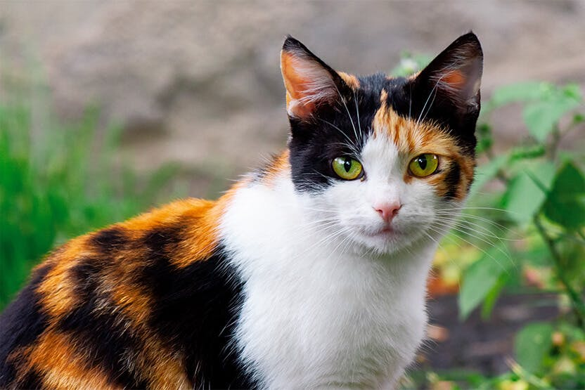
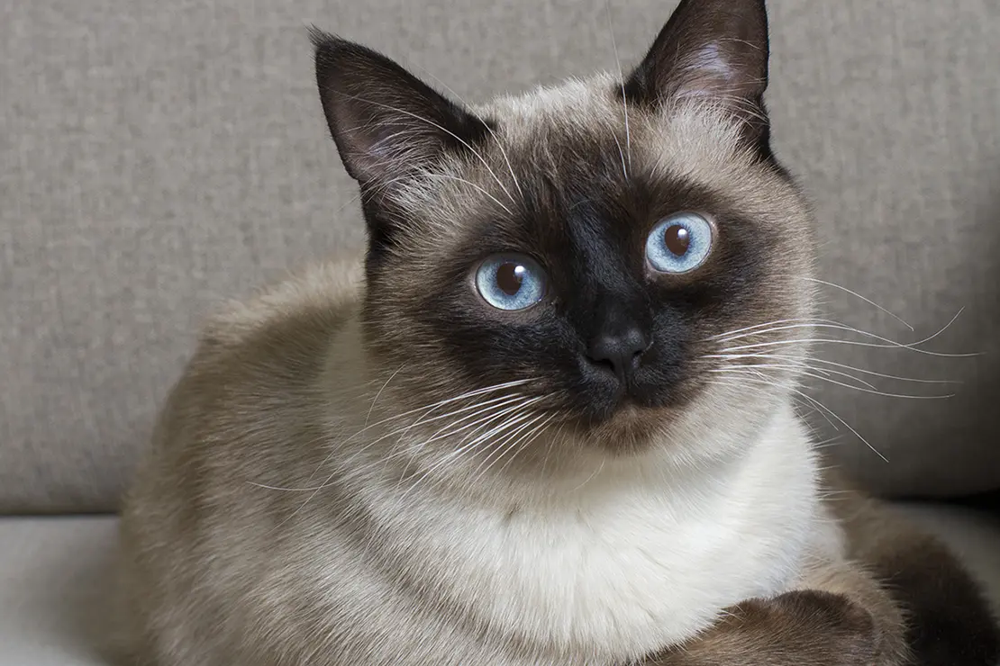

Solid
Kucing dengan pola bulu solid memiliki warna tunggal yang merata di
seluruh tubuh. Warna ini bisa berupa hitam, putih, abu-abu, cokelat,
atau oranye. Pada pola ini, tidak ada bintik, garis, atau variasi
warna lain. Jenis ini cenderung terlihat elegan dan sederhana.
Contoh kucing dengan bulu solid adalah Russian Blue dengan bulu
abu-abunya yang lebat dan lembut.
Tabby (Loreng)
Pola tabby adalah salah satu yang paling umum ditemui, dan terdiri
dari garis-garis, bintik-bintik, atau lingkaran yang membentuk pola
tertentu di bulu kucing. Tabby sebenarnya bukan ras kucing,
melainkan pola genetik yang bisa muncul di berbagai ras. Ada
beberapa varian tabby :
- Classic tabby
- Mackerel tabby
- Spotted tabby
- Spotted tabby
- Ticked tabby
Tabby sering kali dikenali dengan adanya pola "M" di dahi mereka.
Tortoiseshell
Pola tortoiseshell atau "tortie" adalah perpaduan warna hitam,
oranye, dan cokelat, biasanya tersebar tidak beraturan di seluruh
tubuh. Kucing dengan pola ini sering kali betina, karena pola
tortoiseshell terkait dengan kromosom X. Pola ini memberikan kesan
dramatis dan artistik. Beberapa kucing tortoiseshell juga memiliki
bintik putih, yang disebut "tortie and white".
Calico

Pola calico mirip dengan tortoiseshell tetapi dengan tambahan warna
putih yang lebih dominan. Calico memiliki kombinasi warna putih,
hitam, dan oranye atau krem. Warna-warna ini biasanya terpisah
dengan jelas dalam bentuk bercak-bercak besar.Seperti tortoiseshell,
calico umumnya betina. Contoh kucing calico bisa ditemukan pada ras
Japanese Bobtail. Pola Ini memberikan kucing tampilan yang ceria dan
penuh warna.
Colorpoint

Kucing dengan pola colorpoint memiliki warna gelap pada bagian tubuh
tertentu seperti telinga, wajah, cakar, dan ekor, sementara bagian
tubuh lainnya berwarna lebih terang. Pola ini muncul akibat gen yang
sensitif terhadap suhu, dimana bagian tubuh yang lebih dingin
menjadi lebih gelap. Contoh paling populer dari kucing colorpoint
adalah Siamese dan Ragdoll.